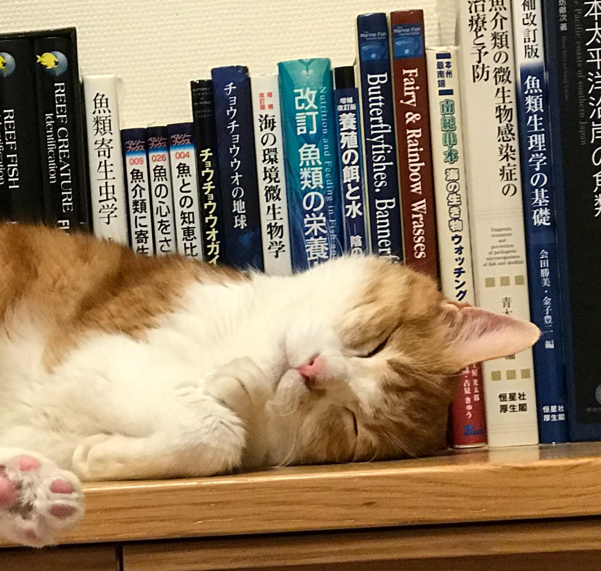

About
はじめまして、azuと申します。
アクアリウムは、私にとって人生の真ん中にある「ライフワーク」ともいえる存在です。
■ 40年にわたる飼育の歩み
幼少のころから水辺の生き物が大好きで、川で魚を採取したり、
小さなバケツで育ててみたり……
そんなささやかな体験が、やがて本格的な海水魚との暮らしへとつながっていきました。
多少のブランクはあったものの、淡水から始まり通算約40年以上もの長きにわたり
アクアリウムを楽しんでまいりました。
日淡に夢中だった頃、河口で偶然シマフグを採取したのがきっかけで、
海水魚の世界に足を踏み入れたのは22年前の春。
以来、試行錯誤を重ねながら、
現在では150cm、120cm、60cm、と4本の水槽で
海水魚やサンゴの飼育を楽しんでいます。
■ 科学的知見を参考にした飼育への転換
最初の11年間は一般的に知られている常識やノウハウを実践していましたが、
魚が長生きしない、体型がおかしい、体色が褪せる、成長が思わしくないなど
様々なトラブルが多発しました。
常識通りにやっても思い描く結果が出ないことに、強い違和感を覚えたのもこの頃です。
その経験を経て、のちの10年間はアクアリウムの情報だけでは限界を感じ、
魚の栄養学や生理学などの専門書籍や科学論文を調べ、学ぶようになりました。
それまで培ってきた経験や常識を無条件に受け入れるのではなく、
精査し、補い、ときには置き換えながら、
素人なりに独自の探求と実践に切り替えていきました。
この試行錯誤の道のりこそが、今の長期飼育の知見の土台となっています。

■この場所に込めた思い
飼育や様々なアクアに関する情報の
集大成として形に残したいと思いこのホームページを立ち上げました。
特に「海水魚の長期飼育について」の気づきやこだわりや工夫を綴っていけたらと思っています。
読んでくださる方に、飼育のヒントや共感が届いたら——そんなふうに思っています。
かつて、飼育を始めたばかりの頃に「とっと日和」というブログを綴っていました。
いま読み返すと、少しちゃらちゃらしていて恥ずかしいですが（笑）
それもまた大切な原点です。
🔗 旧ブログ「とっと日和」（2008〜2016年） http://bokkenyan.blog7.fc2.com/
このホームページは、その「とっと日和」の続編として書いていくつもりです。
Twitterは2010年2月から、Instagramは2018年2月から、
同じハンドルネームazuで、
それぞれ主に日頃の水槽の様子などを気ままに更新しております。
機会があれば是非覗いてみてください。
かけがえのない家族である7匹の猫たちと、
水槽４本の魚たちのお世話でにぎやかな日々を送っています。
どうぞよろしくお願いいたします。
日本魚類学会会員
日本水産学会会員